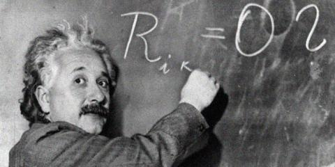

한번 뿐인 인생, 우리는 어떻게 살아야 할까요?
인생은 뜨거운 열정으로 살아야 합니다!
후회하지 않을 정도로 불타고, 후회하지 않을 마음으로 임하는 것이 중요합니다.
때로는 이성적이고 차분한 모습도 좋지만, 저 별들은 가만히 앉아서 빛나는 것이 아닙니다.
별이 빛나는 이유는 스스로 핵융합으로 에너지를 만들어내기 때문이죠.
아니, 엄밀히 말하자면 별들은 매우 열정적으로 살고 있기 때문이죠!
인생을 열정적으로 살기 위해선, 다음과 같은 명언을 봐주시길 바랍니다.
불같은 열정으로 살아가봅시다!.

“삶은 자전거타기와 같단다.
균형을 잡으려면 계속 움직여야 하거든.
[1930.2.5, 아들에게 보낸 편지에서]-알베르트 아인슈타인
“나를 죽이지 못한 모든 시련은 나를 한층 더 강하게 만든다.”
“살아있는 한, 나는 점점 더 강해질 것이다.”
[프리드리히 니체]
“성공의 크기는 열망의 깊이에 좌우된다.”
[피터 데이비스]
“I am the bone of my sword...
나의 몸은 검으로 되어 있다.”
[FSN]-아처
“열정! 열정! 열정!”
[한사랑산악회]
“나는 실패한 적이 없다. 그저 작동하지 않는 10000개의 방법을 발견했을 뿐이다.”
[토마스 에디슨]
"끊임없이 노력하라. 체력이나 지능이 아니라 노력이야 말로 잠재력의 자물쇠를 푸는 열쇠다."
[윈스턴 처칠]
"승리는 가장 끈기있는 자에게 돌아간다.”
[나폴레옹 보나파르트]
"결코 끌 수 없는 열정으로 삶을 살아라”
[셰익스피어]
"중요한건 투견의 크키가 아니라, 투견이 지닌 투지의 크기다.”
[드와이트 D. 아이젠하워]
"열정은 성공의 열쇠, 성공의 완성은 나눔이다.”
[워렌 버핏]
"열정은 때때로 광기로 보일 정도로 뜨겁다."
[김은호]
"요즘 세상에는 노력의 힘이 과소평가되는 경향이 있다.
그러나 아무리 재능이 없는 사람일지라도
엄청난 노력을 그 몸에 쌓아온 자와 그렇지 않은 자의 차이는
그야말로 하늘과 땅 차이. 노력이란 그런 것이다."
[더 복서 42화 - 히어로 (1)]